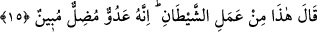

MÛSÂ
YİĞİTLİK ÇAĞINA
ERİŞİNCE
14. Mûsâ yiğitlik çağına erip olgunlaşınca, biz ona hikmet ve ilim verdik. İşte biz
güzel davrananları böylece mükâfatlandırırız.
15. Mûsâ, ahâlisinin habersiz olduğu bir sırada şehre girdi. Orada, biri kendi
tarafından, diğeri düşman tarafından olan iki adamı birbiriyle döğüşür buldu. Kendi
tarafından olanı, düşmana karşı ondan yardım diledi. Mûsâ da ötekine bir yumruk
vurup ölümüne sebep oldu. (Bunun üzerine:) Bu şeytan işidir. O, gerçekten
saptırıcı, apaçık bir düşman, dedi.
“Mûsâ yiğitlik çağına erip olgunlaşınca,”
Gençlik, insanın kuvvetli ve güçlü çağıdır. Bu da 18 ilâ 30 yaş arasıdır. “__WORD__
kelimesinin binâsı câmi olup mânâsı müfreddir. Nitekim Yûsuf sûresinde de geçmişti.
“__WORD__ kavramı, zekâ ve akıl yönünden kemâle erme ve 40 yaşına ulaşmaktır.
Nitekim Ahkâf sûresinde “Nihâyet insan güçlü çağına ulaşınca...” dan sonra “ve kırk
yaşına ulaşınca...” (el-Ahkâf, 46/15) buyrulmuştur.
Yûsuf sûresinde ise sâdece “Yûsuf kuvvetli çağına erişince...” (Yûsuf, 12/22)
buyrulmuştur. Çünkü kuyuya atılınca Allah ona çocuk yaşında vahyetmişti. Mûsâ (a.s.)’a
ise kırk yaşından sonra vahyetti. Nitekim devamla buyurur ki:
“Biz ona hikmet ve ilim verdik.” Yâni biz ona hüküm ve ilim; peygamberlik ve din
ilmini verdik. Kâşifî der ki: Bu kazıyye esnâsında nübüvvetin zikredilmesi, her iki
vaadin doğruluğunu ortaya koyar: Onu annesine ulaştırdık ve peygamberlik de verdik.
Cumhur, Rasûlullah (s.a.)’in kırk yaşının başında peygamber olarak gönderildiği
görüşündedir. Bazılarına göre, her peygamber bu yaşta gönderilmiştir. Bazıları da der
ki: Peygamberler hakkında kırk yaş şartı çok önemli bir şey değildir. Çünkü Îsâ (a.s.)
otuz üç yaşında peygamber iken semâya yükseltilmişti. Yûsuf (a.s.) onsekiz yaşında iken
peygamberdi. Yahyâ (a.s.) büluğ yaşından önce peygamberdi. Onun iki veya üç yaşında